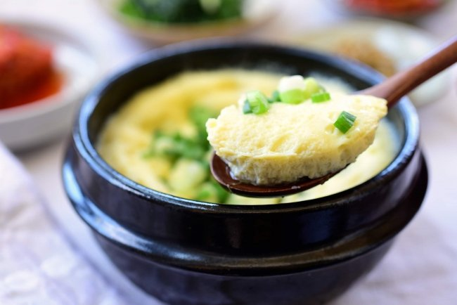
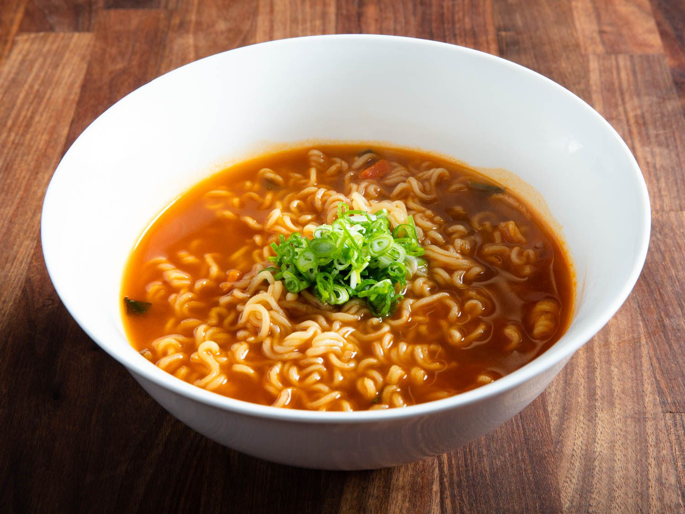

Odin Recipes
Fluffy Eggs

Ingredients
- 3 Eggs
- Scallions
- Fish Sauce
- Salt
- Milk
- White Pepper
- Water
- Sesame oil
Instructions
- Heat up water to prepare for streaming
- Crack 3 eggs into a bowl, add a pinch of salt, and whisk
- Add a 1:1 ratio of beaten eggs and water
- Add like 3 spoonful of milk
- Add like 1 spoonful of fish sauce
- Add as much white pepper as reasonably possible
- Whisk one last time before transferring your egg mixture into a flat bowl/tall plate or the korean bown specifically made for this
- Once the water is boiling, put your egg + bowl/plate into the pot/wok and steam for 10 minutes
- While the eggs are steaming, thinnly chop up some scallions and prepare a spoonful of sesame oil
- After 10 minutes, close the fire and add the scallions and sesame oil onto the eggs, spreading them
- Close the pot and let the residual heat cook the eggs for an additional five minutes
- After all that you have yourself some nice steammedd eggs
Shin Ramen Recipes

Ingredients
- Instant Shin Ramen Package
- Scallions
- Hot chili oil
- Garlic
Instructions
- Get a pot of water and boil it
- Chop up 1 stalk of Scallions
- Mince infinite cloves of garlic until satisfied
- Once the water boils, put the ramen in the pot and as much seasoning as you want
- Let the ramen cook for about 3 minutes
- while waiting, set up the minced garlic into a bowl
- heat up your chili oil until it starts shizzling and then pour it over the minced garlic
- Once the 3 minutes are up, drain the noodles and transfer to the bowl
- Stir and then top of it will some scallions
Vietnamese Coffee

Ingredients
Instructions
- Prepare your coffee however you want. I like instant coffee so I'm just going to use that
- Add however much condensed milk into your drinking cup
- Typically I prefer my viet coffee darker so I like to add my coffee with roughly a 1:6 or 1:7 ratio of condensed milk to Coffee
- Stir thoroughly and enjoy this new coffee experience